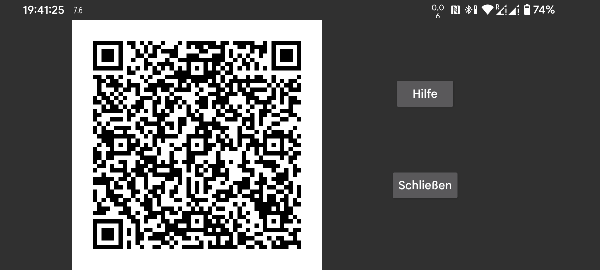

Sie können die andere Seite einer Klonverbindung konfigurieren, indem Sie auf dem anderen Telefon einen QR-Code mit dem linken Menü → Foto scannen.
Mit dem linken mittleren Menü → Klon → Auto-QR werden beide Seiten der Verbindung automatisch hergestellt. Damit können Sie alle Daten von diesem Telefon an ein anderes Telefon senden.
Auf diese Weise können versehentlich viele Verbindungen erstellt werden. Sie können diese löschen, indem Sie darauf tippen und auf Ändern und dann auf Löschen drücken .
Verwenden Sie das linke mittlere Menü → Klon → Verbindung hinzufügen → QR, um eine Seite der Verbindung auf einem Telefon manuell zu konfigurieren und die andere Seite durch Scannen des QR-Codes zu konfigurieren.